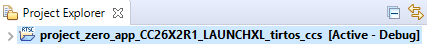
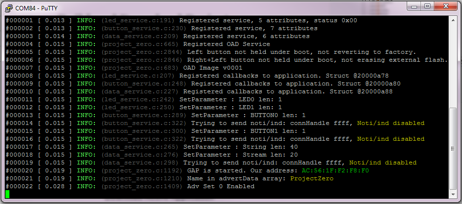
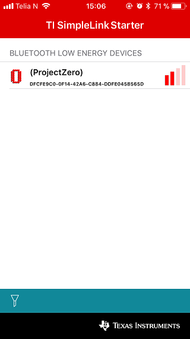
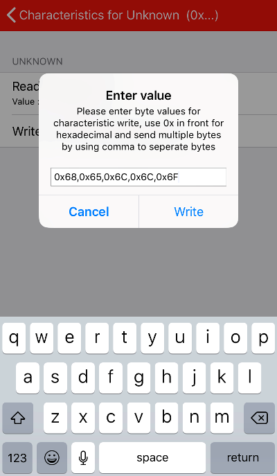
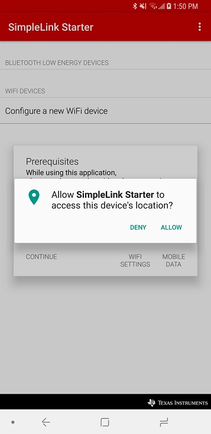
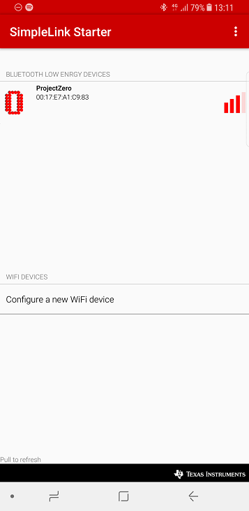

TI BLE5-Stack Quick Start¶
This section serves as a road map for users developing applications and products using the TI SimpleLink CC2640R2 wireless MCU platform for Bluetooth Low Energy applications. Whether a seasoned developer or just getting started, TI has created a variety of resources to simplify development on the CC2640R2 platform. These resources will enhance your experience with the TI SimpleLink TI BLE5-Stack 1.01.11.00 from the out-of-the-box demo to production.
To download the CC2640R2 SDK, please visit the download page: http://www.ti.com/tool/SIMPLELINK-CC2640R2-SDK.
Figure 1. shows the suggested work flow for getting started with TI’s SimpleLink Bluetooth Low Energy (BLE) development environment.

Figure 1. Suggested Workflow
Using BLE5-Stack Projects with CCS¶
Importing BLE5-Stack app projects into CCS will also import BLE5-Stack stack library projects into CCS. The stack library project is a dependent project and will be automatically built when the example is built.
For more details and how to change configurations look at the SimpleLink TI BLE5-Stack User’s Guide.
Import Project Using Resource Explorer¶
A quick and easy way to start working with the SDK is to use the TI Resource Explorer in CCS.
This section describes how to import and build an existing project and references the project_zero project. All of TI BLE5-Stack projects included in the development kit have a similar structure.
Open the CCS IDE from the Start Menu.
Create a workspace.
Attention
Ensure that the CCS workspace path does not contain a whitespace.
Import a CCS Project using Resource Explorer
- Open Resource Explorer (if not open already): View -> Resource Explorer
- Navigate to the CCS folder for your chosen example: Software → SimpleLink CC2640R2 SDK → Examples → CC2640R2F LaunchPad → ble5stack → project_zero → TI-RTOS → CCS Compiler → project_zero_app

Figure 2. Import CCS Projects
Select the CCS Logo button to import project into Project Explorer
Attention
The import process will also install the SimpleLink CC2640R2 SDK if a local version does not exist. You must accept the End User License Agreement to proceeed.

Figure 3. Install SimpleLink CC2640R2 SDK
After the installation finishes, you must reopen CCS before importing the project.
- If you get a pop-up window with an error message, under “Details >>” saying “Error: A project with the name ‘xx_stack_library’ already exists in the workplace!”, that is fine. You accidentally imported the stack twice. Just click OK.
- If everything is successful, three projects should appear in Resource Explorer: one for the application code (ble5_project_zero_cc26x2r1lp_app), one for the stack code (ble5_project_zero_cc26x2r1lp_stack_library), and one for the BIM (cc26x2r1lp_bim_offchip).
Note
Not all projects in the SimpleLink CC2640R2 SDK will have both an app and a stack library project. Refer to the relevant protocol Quick Start section for working with non-BLE5-Stack projects in the SimpleLink CC2640R2 SDK.
Figure 4. Projects Imported into CCS
Build and Download Project¶
For all build configurations, the Stack project should always be built before the Application project.
To build & download Project Zero:
Build the Stack Library project.
- Set the Stack Library project as the active project.
- Select Project -> Build All to build the Stack Library project.
Build the Application project.
- Set the Application project as the active project.
- Select Project -> Build All to build the Application project.
Load the Application project (this will include the Stack Library)
- Select Run -> Debug to download the application
Note
Application projects that consume the stack in a library form will not have hard defined image boundaries.
After the initial build, if the stack project is not modified, only the application project needs to be rebuilt.
Before beginning execution, open a terminal window with the following settings:
| UART Param | Default Values |
|---|---|
| Baud Rate | 115200 |
| Data length | 8 bits |
| Parity | None |
| Stop bits | 1 bit |
| Flow Control | None |
When the debugging session opens, click the Green start button to start execution.
Continue on to the Running the Demo section for information about using
Project Zero.
Using BLE5-Stack Projects with IAR¶
When building with IAR, it is recommended to enable all build messages. This can be done by right-clicking in the Build window and selecting “All” as shown below:

Figure 5. Enable All Build Messages
Import Project Using Workspace¶
This section describes how to open and build an existing project and references the project_zero project.
All of the TI BLE5-Stack workspace included in the SimpleLink CC2640R2 SDK have an Application project and a Stack Library project.
Error
If you have imported the global
<SDK_INSTALL_DIR>/tools/iar/SIMPLELINK_CC2640R2_SDK.custom_argvars,
then TI BLE5-Stack examples will fail to build. For TI BLE5-Stack examples,
you must remove this custom_argvars file from your IAR global custom
arguments.
Open the IAR Embedded Workbench IDE from the Start Menu.
Open an IAR workspace project: File -> Open -> Workspace…
- For this example, select <SDK_INSTALL_DIR>\examples\rtos\|LP|\ble5stack\project_zero\tirtos\iar\ble5_project_zero.eww
{kind=link}
This workspace file is for the project_zero project. When selected, the files associated with the workspace become visible in the Workspace pane on the left side of the screen. See Figure 6.
Select either project as the active project by clicking the respective tab at the bottom of the workspace pane. In Figure 6., the Overview tab is selected. This tab displays the file structure for both projects simultaneously. In this case, use the drop-down menu at the top of the workspace pane to select the active project. Each of these projects produces a separate downloadable object.
Build and Download Project¶
For all build configurations, the Stack project should always be built before the Application project.
To build & download Project Zero:
Build the Stack Library project.
- Select the Stack project.
- Select Project -> Make to build the Stack Library project.
Build the Application project.
- Select the Application project.
- Select Project -> Make to build the Application project.
Load the Application project (this will include the Stack Library)
- To download and debug: Select Project -> Download and Debug
- To download without debugging: Select Project -> Download ->
- Download Active Application
Note
Application projects that consume the Stack in a library form will not have hard defined image boundaries.
After the initial build, if the Stack project is not modified, only the application project needs to be rebuilt.
Refer to the Project Zero README for more information about this project.
Before beginning execution, open a terminal window with the following settings:
| UART Param | Default Values |
|---|---|
| Baud Rate | 115200 |
| Data length | 8 bits |
| Parity | None |
| Stop bits | 1 bit |
| Flow Control | None |
When the debugging session opens, click the start button to start execution.
Continue on to the Running the Demo section for information about
using Project Zero.
Running the Demo¶
After hitting the play button, your terminal window should display the Project Zero initialization information as shown below:
Figure 7. Project Zero Initialization
This provides information about the services present in Project Zero. Project Zero has 3 interactive services: the LED service, the button service and the data service.
Writing a non-zero value to the LED service will cause the LEDs on the LaunchPad to light up. Writing zero will turn them off. Enabling notifications on the Button service will cause the Peripheral to send notifications of current button state (0 - not pressed, 1 - pressed) to the Central device. The Data service can be used to read and write multiple bytes of data.
Choose the Central device from the list below to connect with:
Host Test Setup
The easiest way to connect to Project Zero with another CC13xx/26xx LaunchPad is by using BTool. BTool allows you to send HCI commands to the LaunchPad to easily establish BLE communication with another device.
To use BTool, you must flash your second CC2640R2F LaunchPad with the Host Test firmware from a compatible version of the TI BLE-Stack/BLE5-Stack. Pre-built Host Test binaries are included in the ble5stack examples directory of the SDK.
Uniflash can be used to program the LaunchPad with the Host Test firmware:
Figure 8. Flash Host Test using Uniflash
Open BTool from the toolsble5stackbtool folder of the SDK_INSTALL_DIR. Select the XDS110 UART COM Port for your Host Test LaunchPad:
Figure 9. BTool Serial Port Settings
When BTool connects to the LaunchPad, it will issue several initialization commands. If the commands succeed, you will receive multiple HCI Events with a Status of “SUCCESS”.
Connect to Project Zero
Scan for nearby advertising Bluetooth devices by selecting the Scan button in the Discovery window. Make sure your Project Zero LaunchPad is connected to power and advertising.
Compare the device addresses in the Slave BDA dropdown with the address shown in the Project Zero terminal window. Select the matching address and click “Establish” to connect to Project Zero.
Figure 10. Scanning & Connecting with BTool
After the connection has established, discover & read the current value of the services and characteristics available on Project Zero by right-clicking on the Handle in the Connection Info section and selecting Read Values.

Figure 11. BTool GATT Table Discovery
The bottom of the BTool GUI will display the Project Zero GATT Table to help you navigate and control the Project Zero services.

Figure 12. BTool GATT Table Discovery
Using the LED Service
Writing 0x01 to the characteristics in the LED Service will turn on the Project Zero LaunchPad LEDs. You can write to the characteristic by double clicking the Value field of the LED0 State or LED1 State characteristics.
Figure 13. Writing to a Characteristic
The Project Zero terminal window will update with the current LED state:

Figure 14. Turning on Project Zero LEDs
Using the Button Service
You can choose to receive notifications about the current state of the Project Zero Button Service by writing 01:00 to the Client Characteristic Configuration Descriptors of the Button Service. After enabling notifications, the current value of the Button state will be displayed in BTool.

Figure 15. Enabling Notifications in BTool

Figure 16. Pressing & Releasing Buttons
Using the Data Service
You can read and write multiple bytes of data by using the Data Service. Double click on the Value field of the String Char. You can write the new value directly in ASCII or you can choose a different type by selecting from the Value Type dropdown menu.

Figure 17. Writing to the Data Service

Figure 18. Data Service Value change
Download the latest version of the TI SimpleLink Starter app from the iOS app store. When the download completes, open the app:

Figure 19. SimpleLink Starter App
Connect to Project Zero
When the app opens, nearby Bluetooth Low Energy devices will appear. You should see ProjectZero advertising as shown below:
Figure 20. Project Zero Advertising
Press the Project Zero item and select Sensor View. The services present in Project Zero will appear as shown below:

Figure 21. Project Zero Advertising
The Project Zero terminal information will also update with connection information including the peer device address, PHY, and MTU Size. For more information about these parameters, see the BLE5-Stack User’s Guide.

Figure 22. Project Zero After Connection
Using the LED Service
To turn on an LED, press one of the buttons on the LED service. The left button turns on the Red LED (DIO6). The right button turns on the Green LED (DIO7). Pressing the button again will turn the LED off. The Project Zero terminal window will update with the current LED state.
Figure 23. Project Zero LED Service
Figure 24. Turning on Project Zero LEDs
Using the Button Service
Button press notifications are automatically enabled when connecting through the Sensor View. If you press and release either button, the Sensor View will update with the current state and the button state graph will show the button state over time (High corresponds to button pressed, low corresponds with button released).

Figure 25. Project Zero Button Service
Figure 26. Pressing & Releasing Buttons
Using the Data Service
The Data Service is not displayed in Sensor View. To use the Data Service, close the Sensor View by pressing the < Sensor Tag button in the upper left. This returns you to the main SensorTag view. Press the ProjectZero icon again and now select Service Explorer. The Data Service is the service with the UUID that begins with F0001130 (List Item 3). Press the item and you will see two characteristics. The first characteristic can be used to read and write multiple bytes of data. You can do this by pressing Read characteristic to get data from ProjectZero and Write w/response characteristic to send multiple bytes of data to ProjectZero.
Figure 27. Project Zero Data Service
Figure 28. Writing to the Data Service
Download the latest version of the TI SimpleLink Starter app from your app store. When the download completes, open the app:
Figure 29. SimpleLink Starter App
Enable location permissions to allow the app to function properly:
Figure 30. SimpleLink Starter Location Permissions
Connect to Project Zero
Open the SimpleLink Starter app on your device. The app should begin scanning for BLE devices automatically but you can force a refresh by pulling down on the device list. Make sure your Project Zero LaunchPad is nearby and advertising. Project Zero should appear in the Bluetooth low energy devices list:
Figure 31. Discovering Project Zero
Establish a connection to the Project Zero by clicking on its name in the devices list. The SimpleLink Starter application will display the Project Zero services and displays GUI widgets to interact.

Figure 32. Project Zero Services
Using the LED Service
To turn on an LED, press one of the buttons on the LED service. The left button turns on the Red LED (DIO6). The right button turns on the Green LED (DIO7). Pressing the button again will turn the LED off. The Project Zero terminal window will update with the current LED state.
Figure 33. Project Zero LED Service
Figure 34. Turning on Project Zero LEDs
Using the Button Service
Button press notifications are automatically enabled when connecting through the Sensor View. If you press and release either button, the Sensor View will update with the current state and the button state graph will show the button state over time (High corresponds to button pressed, low corresponds with button released).
Figure 35. Project Zero Button Service
Figure 36. Pressing & Releasing Buttons
Using the Data Service
The Data Service is not displayed in Sensor View. To use the Data Service, you will need to switch to the Service Explorer view. Tap Service Explorer in the top right of the screen to switch views. The Data Service is the service with the UUID that begins with F0001130 (Project Zero Stream Service). Tap the item and you will see two characteristics. The first characteristic can be used to read and write multiple bytes of data. You can do this by pressing Read characteristic to get data from ProjectZero and Write w/response characteristic to send multiple bytes of data to ProjectZero.
Figure 37. Project Zero Data Service
Figure 38. Writing to the Data Service
Learning More About TI BLE5-Stack¶
Resources contained in the Learn track of Figure 1. are intended for users who are new to BLE or TI-RTOS. These modules demonstrate how to create custom applications with TI BLE5-Stack and TI’s Real Time Operation System (TI-RTOS).
- SimpleLink Academy www.ti.com/simplelinkacademy
SimpleLink Academy provides a comprehensive set of training tools that allow users from beginners to experienced developers to learn about the SimpleLink MCU Platform.
Using introductory material and labs, learn the fundamentals of BLE and how to develop a custom BLE profile.
SimpleLink Academy also contains modules written to demonstrate the rich debug environment and peripheral driver capability provided by TI-RTOS.
- TI-RTOS Kernel Workshop www.training.ti.com/ti-rtos-kernel-workshop
This material teaches users who are new to TI-RTOS or any RTOS programming in general about TI’s RTOS kernel implementation.
Modules within the kernel training greatly expand the information presented in the TI-RTOS Overview chapter in the TI BLE5-Stack User’s Guide.
Learn how the TI-RTOS provides the most optimal power management and design flexibly.
Developing a New BLE5-Stack Based Application¶
The develop track of Figure 1. is intended for programmers who are ready to start developing an end product using the CC2640R2. To begin:
Get Familiar with the BLE5-Stack User’s Guide
This User’s Guide is meant to be used alongside the TI BLE5-Stack when developing an end product. It contains documentation on the stack architecture, APIs, and suggestions for developing applications.
Select an Example Project
The TI BLE5-Stack includes a basic set of projects to use as a starting point for development of your custom application. Click the links below to find out more information about each project:
| Name | Description |
| host_test | A network processor project that is interfaced with HCI and Vendor Specific HCI commands. |
| project_zero | Feature rich peripheral application that provides LED and button functionality OOB |
| simple_broadcaster | Demonstrates a simple Bluetooth Low Energy broadcaster application that implements non-connectable advertisements |
| simple_central | Implements a basic BLE central device with GATT client functionality. |
| simple_peripheral | Demonstrates a simple Bluetooth Low Energy slave application that implements connectable advertisements and a simple profile. |
Troubleshooting Help
While developing your custom application, you may run into issues that require the use of a debugger. See the Debugging chapter in the TI BLE5-Stack User’s Guide for guidance.
Enhance Your Project¶
The enhance track of Figure 1. is intended to take your product to the next level by leveraging TI’s web-based collateral. Additional resources found in these pages include application-specific source code examples, smart phone source code, and complete sub-system designs.
- TI SimpleLink GitHub TI SimpleLink GitHub
Additional sample applications created to implement specific use cases and examples. These are made to work in conjunction with the SDK.
- TI Designs™ http://www.ti.com/tidesigns
Examples of system designs containing complete hardware and software examples, using the CC2640R2.
Getting Support¶
The support track of Figure 1. is intended to provide you additional help and resources that aren’t contained in the previous tracks.
- E2E Forums www.ti.com/ble-forum
A support community providing answers to questions relating to the 1.01.11.00 and the CC2640R2. You can browse questions from other developers or ask your own questions if you run into issues developing with 1.01.11.00.